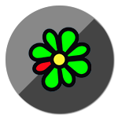
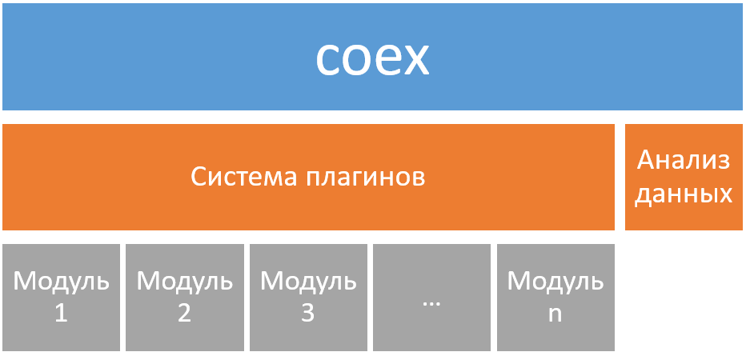

Система Coex
Что такое Coex
Программная система, разработанная для проведения компьютерной экспертизы в рамках судебного делопроизводства и призванная облегчить сбор информации об исследуемом компьютере.
Возможности
Наш програмный комплекс собирает информацию со множества источников на исследуемой машине.
Chrome модуль
Собирает базу паролей, журнал посещаемости, список расширений и настройки браузера.
ImageVerifier модуль
Осуществляет поиск изображений и проверяет их на возможноне соответствие стегоконтейнеру.
SearchProgram модуль
Ищет следы установленных и удалённых программ в исследуемой системе.
Outlook модуль
Находит и собирает переписку из почтового клиента Outlook Express.
Pidgin модуль
Собирает переписку пользователя и список его контактов, журналы мессенджера.

ICQ модуль
Собирает список контактов пользователя мессенджера.
SystemLog модуль
Собирает журналы операционной системы.
FireFox модуль
Собирает журнал посещений одноименного браузера.
Archive модуль
Осуществляет поиск архивов и выводит информацию о них.
Установка
Архитектура системы
Модульность всей системы позволяет оперативно настраивать ее под необходимые задачи. Каждый модуль работает независимо от других, результат работы сводит в единый отчет по окончанию работы системы.